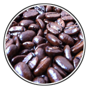
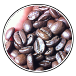

Coffee Liberica
리베리카종(Liberica)은 열대아프라 라이베리아가 원산지입니다. 로부스타 커피나무보다 크고 높이가 15m에 달하며 열매도 크고 저지대에서 지배하기 적당하나 병충해에 약하고 품질도 떨어져서 산지에서 약간 소비될 뿐 거의 수출되고 있지 않습니다. 리바리카종은 아라비카종보다는 향미가 떨어지고 쓴맛이 지나치게 강한편이라 지금은 거의 사라진 상태입니다.
리베리카종(Liberica)은 열대아프라 라이베리아가 원산지입니다. 로부스타 커피나무보다 크고 높이가 15m에 달하며 열매도 크고 저지대에서 지배하기 적당하나 병충해에 약하고 품질도 떨어져서 산지에서 약간 소비될 뿐 거의 수출되고 있지 않습니다. 리바리카종은 아라비카종보다는 향미가 떨어지고 쓴맛이 지나치게 강한편이라 지금은 거의 사라진 상태입니다.

광고를 통해 우리에게 더 친숙한 아라비카종(Arabica)은 세계 커피 생산량의 60~70%를 차지하는 대표적인 커피품종입니다. 원산지는 광고에서 본 것처럼 에티오피아고,주로 800m~2000m이상의 열대 고지대에서 재배되며 적정 강수량은 1,500m~2,000m라고 합니다.향미가 아주 우수하고 신맛이 좋은 것으로 알려져있으며 카페인 함량이 낮은 편입니다.

로부스타종(Robusta)은 코페아 카네포라의 대표품종으로 세계 커피 생산량의 30~40%를 차지합니다. 원래 코페아 카네포라의 대표품종인데, 로부스타란 이름이 널리 알려저 카네포라와 같은 의미로 쓰입니다. 주로 700m이하의 고온다습한 지역에서 재배되며 적정 강수량은 2,000~3,000m입니다. 아라비카에 비해 카페인 함량이 많고 쓴맛이 강하고 향이부족하지만 경제적 이점이라는 장점으로 인스턴트 커피의 주 원료로 사용한다고 합니다.